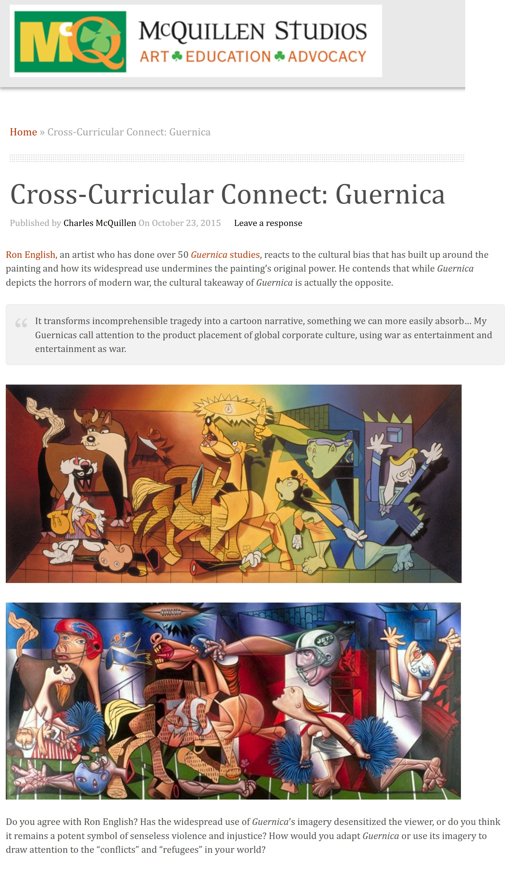

Exhibitions
Reimagining “Guernica” / La réinvention du “Guernica”, Museo de la Paz de Gernika, Gernika-Lumo, Bizkaia, Spain, April 4–December 10, 2017. For this exhibition, the composition was presented as a print on stretched canvas, not as the original painting.
Literature
Museo de la Paz de Gernika, Reimagining “Guernica” / La réinvention du “Guernica” (Gernika-Lumo, Bizkaia, Spain: Museo de la Paz de Gernika, 2017), digital exhibition catalogue / flip-book, available here, accessed April 5, 2026.

Ron English, “Why I Paint Guernica,” HuffPost, February 7, 2014.
“50 варијации на „Герника“ од Пикасо,” Окно.мк, July 11, 2014.

Provenance
Private collection.
Ancillary Documentation


